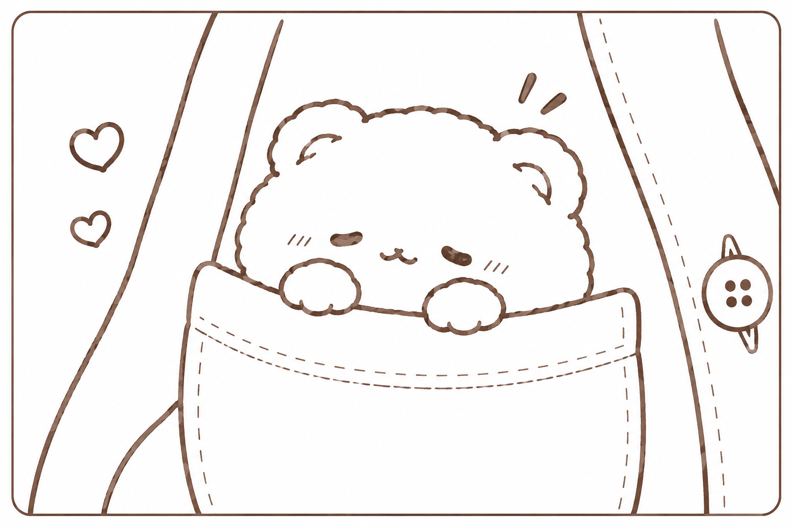

FUNI COLORING BOOK
ふにのぬりえ (いんさつでもブラウザでも塗れる)
ふにのぬりえへようこそ。 ふわふわで、のんびりやさんのふにといっしょに、ぬりえを楽しんでみよう。 ひなたぼっこをしたり、おひるねをしたり、おいしいおかしをたべたり。 ふにの日常をえがいたかわいいイラストを 好きないろでじゆうに塗ってみてね。
どっちで塗る？

ふにのぬりえについて
ふにのぬりえへようこそ。 ふわふわで、のんびり屋のキャラクター「ふに」といっしょに、ぬりえを楽しんでみよう。 A4サイズのPDFなので、おうちのプリンターですぐいんさつできます。 ブラウザで塗るなら、アプリのインストールは不要。スマホでもパソコンでも、すぐに塗れます。
ひなたぼっこをしたり、おひるねをしたり、おいしいおかしをたべたり。 ふにの日常をえがいたかわいいイラストを、いろえんぴつやクレヨンで、 好きないろでじゆうに塗ってみてね。
ぬりえの使い方
- すきなぬりえの「印刷して塗る(PDF)」ボタンを押します。
- PDFをA4サイズでいんさつします。
- 色えんぴつ、クレヨン、マーカーなど、好きな道具で自由に塗ってね。
ブラウザで塗る場合
- 「ブラウザで塗る」ボタンを押します。
- 好きな色を選んで、塗りたい場所をタップ(クリック)します。
ご利用について
個人で楽しむ範囲でご自由にお使いください。 商用利用、再配布、改廃しての配布はご遠慮ください。
塗ったら見せてね
完成した塗り絵は、SNSで＃ふにのぬりえをつけて見せてね🌸
ふにのLINEスタンプ
ふにのLINEスタンプを２種類はんばいちゅう
第1弾をストアで見る 第2弾をストアで見る